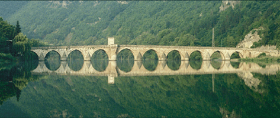

|
UN PONT SUR LA DRINA (The Bridge on the Drina)
Xavier Lukomski | Belgien 2005 | 18 Min.
Format: 35mm Cinemascope
Material: 35mm
Originalsprache: Bosnisch, Französisch
Drehbuch: Xavier Lukomski
Kamera: Jorge Leon
Schnitt: Michèle Hubinon
Produktion: Cobra films
Verleih: Wallonie Image Production (WIP)
Bester Kurzfilm, Festival Punto de Vista de Pampelune 2006
Erster Preis (Kurzfilm), Festival Documenta Madrid 2006
Großer Preis, Filmer à Tout Prix, Brüssel 2006

Eine einzige Einstellung bestimmt den Film: Man sieht die majestätische Brücke von Drina, der Nobelpreisträger Ivo Andrić ein literarisches Denkmal setzte, zu unterschiedlichen Tageszeiten und Stimmungen. In das malerische Bild webt sich die Tonspur einer Zeugenaussage von Poljo Mevsud vor dem Kriegsverbrechertribunal in Den Haag am 17. und 18. September 2001. Er erzählt, wie während des Bosnischen Krieges die Leichen von 180 Männern, Frauen und Kindern unter der Brücke von Drina angeschwemmt kamen. Er beschreibt, wie er und andere Anwohner von Višegrad die Körper aus dem Fluss holten, sie zu identifizieren suchten und ihnen die Würde von Toten zurückgaben. Während die Stimme aus dem Off zu hören ist, webt sich der Horror des Erlebten in die ruhige Schönheit des Bildes - eine historische Wunde, die die die Erhabenheit der Brücke bedeckt.
Xavier Lukomski, geb. 1959, studierte an der Schauspielschule INSAS in Brüssel und begann danach als Schauspieler zu arbeiten. Nach eigenen Theaterregiearbeiten gründete er 1984 das Two Waters Theatre und wurde Schauspieldozent. Neben seiner Theaterarbeit ist er Filmkritiker u.a. für „Les Inrockuptibles“, „Cinéphage“ und „Andere Sinema“ und ist Produzent einer Radiosendung bei France Culture.
Filme: Ça va ?… ça va… 1996| Le Petit Bout du Monde 1998 | Un pont sur la Drina 2005
zurück
|